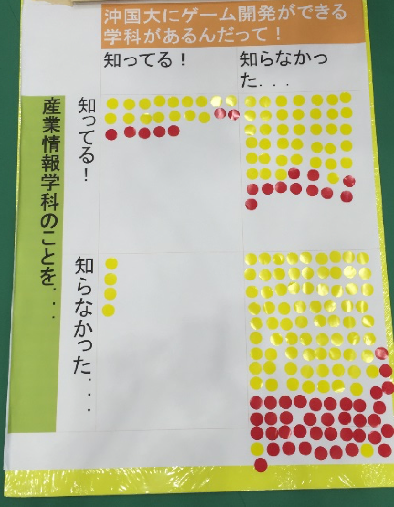

IT津梁まつり2016「プレゼン部門」で優秀賞を受賞しました．
2016年1月22日(金)，23日(土)の両日に豊見城市民体育館で開催された「IT津梁まつり2016」に、本学産業情報学科が出展参加いたしました。
IT津梁まつりは幅広い世代の学生を対象とし，さまざまなITを体験できる沖縄県内最大級のIT体験イベントです．県内のIT企業や教育機関が出展し，それぞれの取り組みを紹介・展示するほか，各種体験コーナーや子供向けイベントなどを実施し，未来のIT人材に繋げるファンを増やして行くイベントです．
今年は昨年を上回り5,000人以上の来場者が訪れ，大盛況となりました．
産業情報学科は情報システムコースの卒業研究の成果発表をメインに展示ブースを設置しました．親子連れの方など多くの来場者に足を運んでいただきました．
2日目には大臣が視察にこられており，若干緊張しつつ説明をしていました．
IT津梁まつりでは「学生によるプレゼン大会」も開催しており，安里ゼミの学生によるプレゼンテーションは審査員の高い評価を受けて優秀賞を頂きました．
ご来場いただいた皆様に感謝申し上げます．
おまけ：
会場で「産業情報学科のことを知ってる！or 知らない！」「ゲーム開発ができる学科があるって知ってる! or 知らない！」の簡単なアンケートを取りました．
ゲーム開発に関しては新聞に掲載されていたのですが，知らない人が多かったですね．しかし，産業情報学科自体の認知度が低い（知らない人が多い）のには少なからずショックが．．．
- 
関連リンク：
・IT津梁まつり2016 http://www.it-matsuri.net/index.html
・「沖国大にゲーム開発講義 人材育成強化へ来年度から」琉球新報，2015年9月4日掲載． http://ryukyushimpo.jp/news/prentry-248354.html